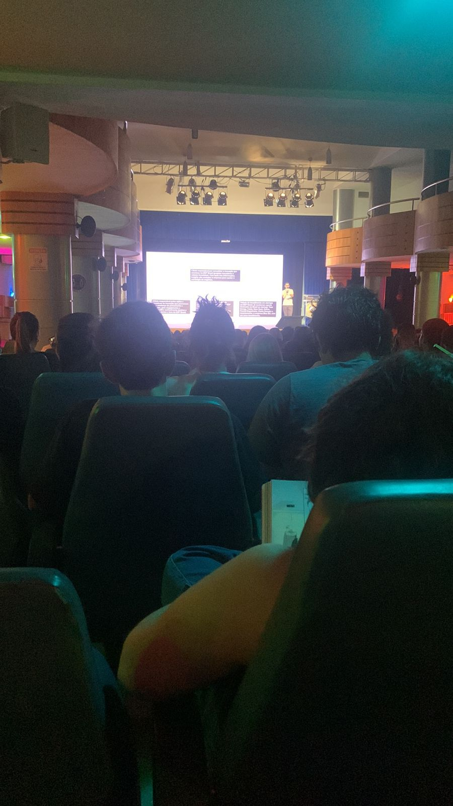
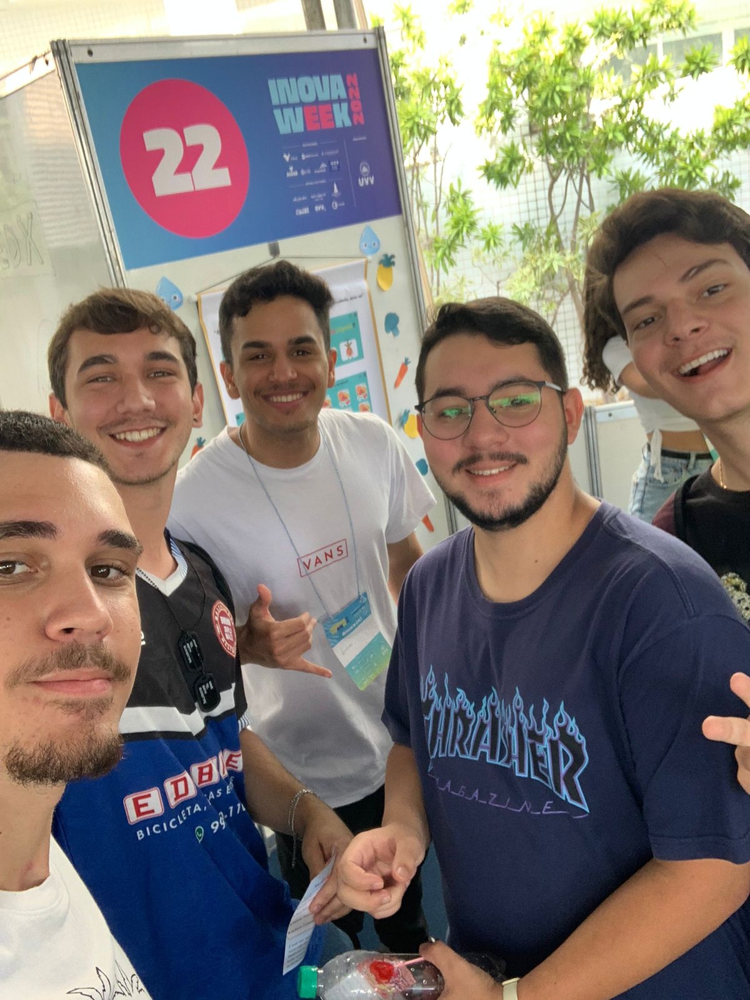

A experiência com o Inova Week foi sensacional, visitamos vários stands e podemos conhecer muitos projetos interessantes, sem contar as palestras que teve e a experiência de andar pelo campus com o evento ocorrendo.
Dentre os stands visitados, um que me chamou bastante atenção foi o NutriKids, que consiste em um aplicativo educativo que ensina a importância da alimentação saudável de forma lúdica, conforme a criança for acertando os objetivos no jogo, vai aparecendo na tela informações sobre vários tipos de alimentos saudáveis, fazendo com que a ela leia aquilo e se sinta interessada e motivada a comer tal alimento pelo fato de ter aparecido no joguinho dela que o alimento faz bem pra saúde e tem uma série de benefícios.
